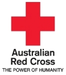
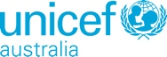

Make Ebola History
- Dr. Peter Salama, UNICEF Global Ebola Emergency Coordinator, Briefing with the UN press corps, 3 November 2014Clearly, this is an unprecedented outbreak, in terms of both scale and complexity. It is of existential significance for the 3 most affected countries, and we are in unchartered waters as a global health community.
... we will not be able to rest, anywhere in the world, until the last embers of the outbreak are extinguished at their source, simultaneously in all 3 countries.
... we must defeat Ebola before it defeats everything else we have been doing for children in these countries
The need to break the spread of Ebola is absolutely key. Right now infection rates are accelerating and we have no option but to rapidly increase our work ... Ebola is consuming whole communities. We are seeing them absolutely torn apart as a result of the disease. Many areas have been forced into quarantine – the streets are completely deserted.- David MacDonald, Regional Head for Oxfam’s response.
To put out the fire we must run into the burning building.- Dr Joanne Liu, International President, Médecins Sans Frontières
Below is a list of our supported charities involved in fighting Ebola, together with a brief summary of the role each plays in this crisis. For a more complete list of Australian charities fighting Ebola and links to their appeals see the Australian Council for International Development's page on Ebola.
Clicking on the Donate link for each charity will direct you to that charity's Australian website and their Ebola appeal form. Outside Australia contact the charity's local office, or if you use Facebook, click on their new Donate Now link .
Quoting from their website ...
Médecins Sans Frontières’ West Africa Ebola response started in March 2014 and now counts activities in three countries: Guinea, Liberia and Sierra Leone. Médecins Sans Frontières currently employs 270 international and around 3,018 locally hired staff in the region.
The organisation operates six Ebola case management centres (CMCs), providing approximately 600 beds in isolation. Since the beginning of the outbreak, Médecins Sans Frontières has admitted more than 4,900 patients, among whom around 3,200 were confirmed as having Ebola. Around 1,140 have survived.
More than 877 tonnes of supplies have been shipped to the affected countries since March. The estimated budget for Médecins Sans Frontières' activities on the West Africa Ebola outbreak until the end of 2014 is 46.2 million euros.
Quoting from their website ...
Oxfam is playing a vital role in preventing the disease by helping ensure people receive treatment, providing water for treatment and isolation centres, and providing protective equipment and hygiene kits. So far, we‘ve reached almost half a million people in Sierra Leone and Liberia, but we urgently need your help to reach more.
We are planning to scale up our Ebola prevention program across the region and need at least $52 million to help 3.2 million people at risk of catching the disease.

Donate to the Red Cross appeal
Quoting from their website ...
More than 4,200 people have become Red Cross volunteers in their communities in West Africa. Because these volunteers live in the places affected by the disease, they can understand and talk honestly with people about their fear and grief, and teach them how to protect themselves and prevent the virus from spreading.
Australian Red Cross has also sent specialist aid workers to Sierra Leone and Liberia, where they are providing much-needed medical care in health facilities struggling to cope with the outbreak.
Money raised from the appeal will be used to support the International Federation of the Red Cross (IFRC) and other Red Cross Red Crescent Societies to:
Donate to the Save the Children appeal
Quoting from their website ...
We've been there – in Sierra Leone, Guinea, Mali and Liberia – since the crisis began, and we've reached more than 265,000 people so far. We are:

Quoting from a Unicef Australia briefing document on the Ebola outbreak, 5 November 2014 ...
UNICEF is one of the largest agencies providing essential supplies for use in treatment and care centres and for the continuity of basic services.
While the immediate focus of UNICEF is to help contain and control the spread of the disease and address the immediate needs of communities, we are also working to maintain and restore basic social services including child and maternal health and nutrition. UNICEF is also supporting preparedness and prevention efforts.
For example, UNICEF is: